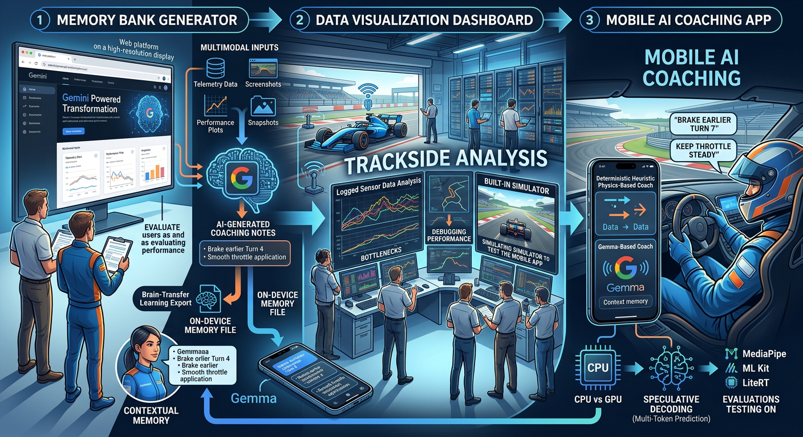
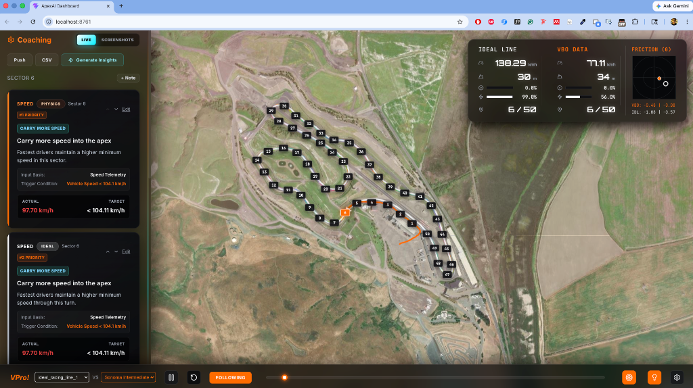
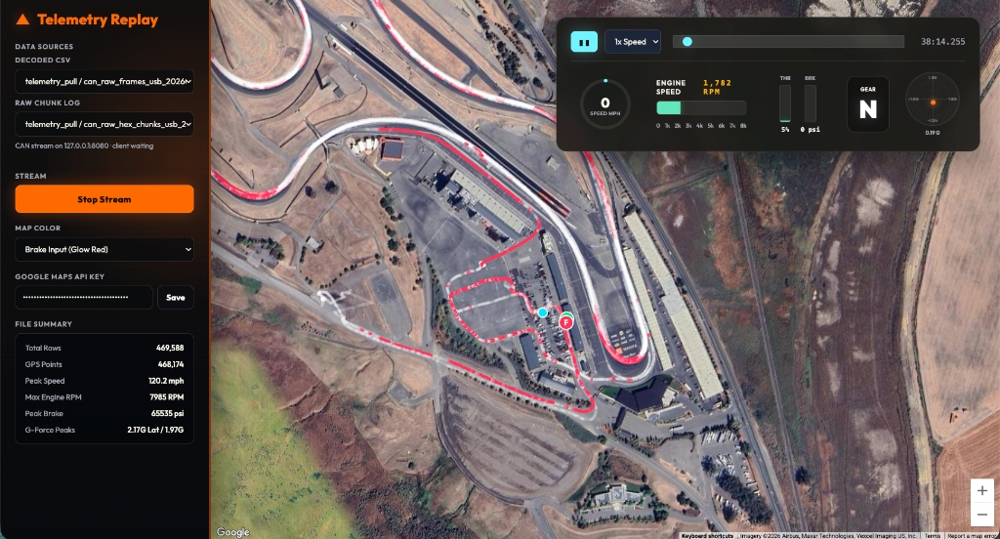
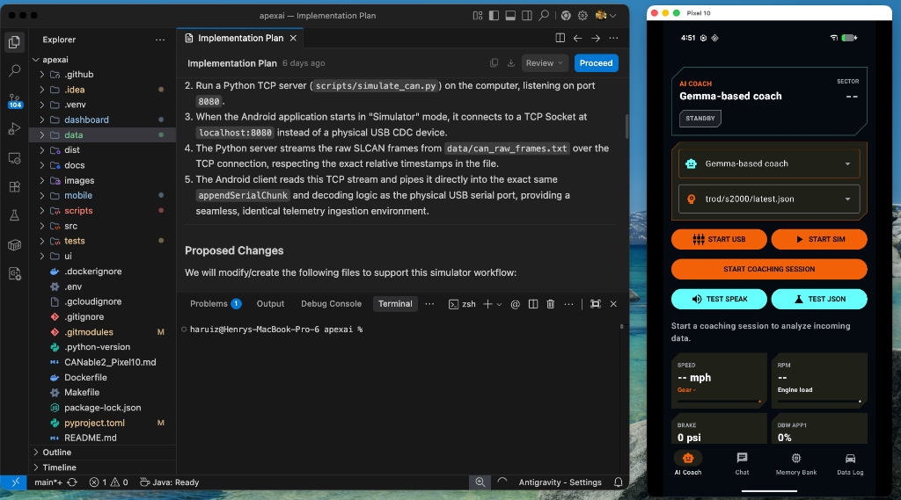

ApexAI
ApexAI is a real-time, on-device AI coaching system designed for professional and track-day drivers. It features a FastAPI telemetry server that ingests Racelogic VBOX .vbo files and raw CAN hex data, an Android application for live telemetry-driven on-device inference, and a Next.js web interface for post-session visualization. The system is designed to operate completely offline, enabling low-latency, trackside driver feedback without relying on external cloud dependencies.
System Architecture

Following our AI Field Test at Sonoma Raceway—where we evaluated the system under real-world conditions and collected live telemetry data for our assigned driver—the ApexAI architecture was refined around three primary components:
1. Memory Bank Generator (located in the dashboard/ directory)

A web platform for coaches and drivers to evaluate, visualize, and debrief driving sessions. Powered by Gemini, the platform processes multimodal datasets—such as telemetry logs, trackside screenshots, data plots, and performance snapshots—to generate structured coaching notes.
These notes can be exported as a “brain-transfer” payload and loaded into the mobile application, providing the on-device Gemma model with contextual memory for real-time coaching.
2. Telemetry and Simulation Dashboard (located in the root folder)

A trackside analysis dashboard for visualizing logged sensor data extracted from the mobile device post-session. It is designed to identify performance bottlenecks and debug telemetry streams. Additionally, a built-in simulator enables developers to emulate track sessions, facilitating end-to-end testing of the mobile coaching application in a desktop environment.
3. Mobile AI Coaching App (located in the mobile/ directory)

The core real-time interface of ApexAI, designed to deliver concise, timely, and actionable audio feedback to the driver while on track. The app deploys two complementary coaching engines: - Deterministic Coach: Executes heuristic, physics-based rules to evaluate driver inputs. - Gemma-Based Coach: Runs an optimized on-device Gemma model, utilizing exported session notes as contextual memory.
To minimize latency under racing conditions, the Gemma implementation was benchmarked across mobile CPUs and GPUs, leveraging speculative decoding (via Multi-Token Prediction) and evaluating multiple runtimes, including MediaPipe, ML Kit, and LiteRT.
Technical Implementation Details
For each of the three core system components, we have implemented specific software modules:
1. Memory Bank Generator (located in dashboard/)
The Memory Bank Generator is built as a web-based data-analysis suite: * Frontend: React + Vite frontend leveraging Leaflet for canvas-based, high-performance rendering of map lines, telemetry points, and friction circles. * Backend: Node.js + Express API which serves maps tiles, manages run folders, and runs the analytics workflow. * Data Ingestion Engine: A high-performance command-line utility written in Rust (dashboard/data-engine/) that parses raw .vbo telemetry logs at high speed. * AI Rule-Generation Pipeline: A Python analytics backend (dashboard/server/scripts/generate_coaching_rules_gemini.py) that leverages Gemini 3.5 Flash to analyze statistical telemetry deltas and associate corner-specific screenshots of track segments. It generates optimized coaching JSON payloads containing exact target adjustments (e.g. throttle, brake pressures, and minimum corner speed thresholds).
2. Telemetry and Simulation Dashboard (located in root / ui/)
The trackside Telemetry and Simulation Dashboard consists of the telemetry simulation and ingestion layer: * FastAPI Telemetry Server: Located in src/apexai/server/. Implements multiple streaming engines: * VBOTelemetrySource (in telemetry_sources.py): Replays VBOX .vbo logs line-by-line using original capture timestamps or throttled intervals. * CanRawChunkTelemetrySource (in telemetry_sources.py): Replays raw serial CANbus log files line-by-line as opaque hex chunks. * CanDecodedTelemetrySource (in telemetry_sources.py): Decodes CAN hex logs via decode_can.py to stream real vehicle parameters (RPM, Gear, Brake Pressure, Water Temp) as JSON payloads. * FastAPI Broadcaster: Multiplexes and streams sensor packets to active listeners via WebSocket (ws://localhost:8000/ws/telemetry) and Server-Sent Events (SSE) (/events/telemetry) endpoints. * Next.js Web UI: Located in ui/. Connects to the FastAPI server, maps the car’s path in real time, and renders charts for active sensor channels. It includes seek, playback speed, and pause controllers via HTTP API calls.
3. Mobile AI Coaching App (located in mobile/)
The Mobile AI Coaching App is a native Android application built in Kotlin: * Dual Coaching Engines: * Deterministic Mode: Continuously evaluates driver speed and inputs against .csv limit tables using a local rules runner to trigger immediate alarms. * AI Coach Mode: Employs Gemma 4:E2B (via a locally-packaged gemma-4-E2B-it.litertlm runtime) to synthesize telemetry trends. * Optimized Edge Inference: * Gated Inference Engine: Monitors real-time steering variance. Inference is blocked during high-lateral G corners to prevent thermal throttling on the device, triggering strictly upon corner exit (on straightaways). * Native LiteRT LM Runtime: Entirely replaces legacy Flutter/MediaPipe wrappers to execute raw offline LLM inference directly on the Pixel GPU/CPU. * Latency Tracking: Logs the duration of the telemetry-to-audio buffer path (within a strict 2-3s window suitable for high-speed driving). * Audio Pipeline: Leverages Android TextToSpeech to deliver natural audio instructions.
4. Tooling & Packaging
- Environment Manager:
uvconsole scripts andmakeshortcuts run the server, launch the UI, and package the static UI into the Python package.
Component Documentation & Setup
For detailed setup, installation, and execution instructions, please refer to the respective documentation for each component based on the folder structure:
- 🏎️ Memory Bank Generator: See dashboard/README.md for web client, Express server, and Rust data-engine setup.
- 📊 Telemetry and Simulation Dashboard: See instructions.md for installing, configuring, running, and testing the telemetry and simulation server and web dashboard.
- 📱 Mobile AI Coaching App: See mobile/README.md for Android app installation, Gemma 4:E2B model setup, and deployment instructions.